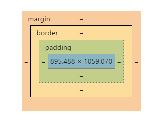

Are designated to flow across and then down the page occupying as much space as there is content
Applying a height and width to an inline object is not possible, one must place inline elements in a block container
There are very few inline elements in HTML5: <span> would be the most commonly used.
Overriding the behaviour of block elements is commonplace, but inline is not the best tool, hybrid styling like inline-block and float are commonly used for compatibility reasons
Accessible browsers have little concern for the stylistic or interactive components of a web interface
The prime concern for web develelopers is allowing disabled users to view content and navigate it, skipping irrelevant meta-information
Skip to Content
Skip to Navigation
Cascading Style Sheets
An attachment to HTML refining presentation characteristics by defining style attributes across web documents
Stylesheets cascade from general (least important) to specific (most important). This precedence system takes a while to master
Elements
Elements can be described in CSS by using the common naming scheme
Sementially described html
They can only be valid HTML tags
HTML Element:
CSS Element:
JavaScript Element:
Classes
Are attributes added to elements that give the HTML document additional meaning
HTML Class:
CSS Class:
JavaScript Class:
IDs
An attribute that more accurately specifies an element. Only one ID per page is allowed
Traditionlly used for creating a href links to target points within a page (think wikipedia), but be applied for a wider set of purposes
Any element can possess an ID and is the easiest way to reference in JavaScript. CSS sees IDs as having greater importance, as it defines a single specific point in the document
IDs have been traditionally be used to target a location within a webpage using a hyperlink
HTML; IDs are declaired as attributes to elements
<navid="sideMenu">
CSS; IDs have a prefixing hash applied to the selector
The combination of border, padding and margin that surrounds each block of content
padding: the space between the content and the border
border: the section that separates on container from the outside
margin: the space outside the container

Press F12 to open Developer tools in Google Chrome. Look to the bottom right
Text Effects
CSS can extend beyond the features of built-in HTML inline text elements
Shadow
Outline
Inline Block Elements
It is common practice to take blocks of content and place them inline to each other
float was a css replacement for the float attribute in the img element. Core use to contol how text flows around images. It can be used in many other situations, because of universal browser compatibility
inline-block: commonly used to inline list items <li> that are usually block elements. They have in-built space a negative right margin fixes this
table: Emulates CSS layout compatable with the <table> element and all it's children.
flexbox: A modern inlining technique with the most features for consistent display for irregular content
grid: A true whole of page layout technique to contain content in the same way a graphic designer would for pages on paper
Layout Techniques
Structures of HTML and Inline techniques combine to build the layout of a page
static: the default state of a element; in normal page flow, with content above affecting the element's position
relative: Takes the element ot of page flow, but leaves a space in flow, where the element would be, good for offsetting the element from its usual position
absolute: Takes element out of page flow, places the element on a new layer over layout relative to the edges of the document
fixed: The element is out of flow on a new layer and relative to the edges of the viewport or window the user sees, it will not scroll with the document, but is static
CSS Variables
Declaring variables help to simplify commonly used styling
Selector named values
var()
url()
Responsive Design
The HTML structure can be styled to accomodate different viewing environements
A base css defines, extra css ovveriedes base selection given certain viewing curcumstances
@ symbol in CSS
mediaquery
viewport
Input
HTML5 increases data entry methods and provide a framework for validating and providing instant user feedback
Forms
The only method available on the web for user input of values. Generally via an HTTP post.
Forms have traditionally acted like complex hyperlinks, redirecting the user to a new page complying with a few attributes
The method attribute ovverides the default behaviour and do a HTTP POST instead of GET, otherwise all form data is sent in the header instead of the body
action has a value which is the URL that sends the form data, and thus the end user will be redirected to this new page
Setting a target attribute allows the HTTP reqested page after form submit, to be redirected to alternative locations within or outside current page
One can use a named target iframe to make the request look like an AJAX request, but have server content "look" like its embedded in the existing web page
Fields
The input element is inline like text but has many attributes which allow customisations for data entry
text
number
button
select option
radio
range
date
Input Validity
CSS has pseudo selectors that give the designer scope to style certain input states
Valid/Invalid
required
focus
Input Styling
There are ways to denote the status of input fields, giving the user clarity fo the state of a form
label
fieldset and Legend
inputs outside forms
Checkboxes
Are a special type on input that have one of two states, this allows for creative uses with pseudo classess in CSS
A checkbox can have a checked state, that can be styled in CSS to do different things in the document
Multimedia
Special declarations in HTML5 can deliver Video and Audio content to the client in a accessible way
Traditionally web pages represented content with a combination of text and image. We used things like animated gif files to help us represent animations. This is no longer necessary
audio
video
Audio
Is Cool I don't know what this does
Video
The video tag features responsive display of video content alternatives depending on client environment
Bitmaps
The primary way of showing images on the web
jpeg
png
Percent styling
JavaScript
Augments the user experience using an event model to track user actions that trigger functionality in the HTML document
The document Object is a representation of the html structure as a JavaScript object. It is called the DOM
The window Object relates to the browser that sorrounds the document
The console Object is an interactive shell the browser has for developers to manipulate the environment in real time
DOM
The Document Object Model is a representation of the entire html structure, using a JavaScript Notation, with the document object at its base
Ovveride CSS styles dynamically
Style can be written into the DOM taking precedence over any pre-set CSS styles, dynamically altering the look of a page
Selective Display
The specific use of styling to remove or show elements in the DOM, give a set of user-selectible states
Form Check Validity
checkValidity() is a function that looks a the pattern attribute and will return a true or false
Window Object
The window object has control over all the external influences that can occur to a document as the user interacts with content
Scroll
events
navigate
Event Model
Everything a user does to chage the state of the DOM needs to be registered beforehand, and actions
onevent (where event is an event name) as an HTML attribute to register an event. It is not recommended, but it is a direct way of embedding the event close to where it is actioned
In JavaScript addEventListener is a method one can apply to document or window objects to register a functional act that will occur when the event is triggered
JavaScript Console
The console is an interactive shell allowing JavaScript code to be executed by the user
Debugging with the console.log('value') structure is commonplace, and allows us to test the state of code as it runs
Effects
Web developers have a new set of tools for rendering elements to the screen, beyond bitmap images
CSS transitions
CSS Keyframes
CSS Animations
The transition style coupled with the @keyframe at rule can create complex animations when a pseudo-class or JavaScript event triggers
SVG
Scaleable Vector Graphics are resolution independant files or document structures that can do line art
Much better than GIF
Canvas
A drawing framework centered around a set of JavaScript objects
Web GL
A library for the display and manipulation of objects in 3D space
Web Audio API
In-built synthesizer for use in-browser
Persistence
The web client has a small amount of memory available to store user state between pages or page reloads
The benefit to the user is to provide some resilience to slow or no server connections or unintended page refreshes
Session Storage
Only survives as long as the window that contains the document stays open
Local Storage
Survives intact for the domain the page was loaded from, as long as the browser stays open
Global Variables
Frowned on in programming circles, but can be useful in maintining persistence between functions without parameter passing
URL parameters
Are key value pairs that reside in the address bar, but can be pulled into the DOM used and manipulated in subsiquent requests
AJAX
AJAX defines a way of connecting to a server without navigating away from the currently loaded page
The goal of web development is creating a separation between user interface and application state. This can easily be implemented using RESTful web services on the server side
The client can acquire and contribute to state within the rules a web service will allow
HTTP GET
A GET request from the server is the most common method of acquiring
HTTP POST
Postdata is generally the submission of form, which allows to be a part of the payload instead of header
HTTP PUT
Equiv. New
HTTP PATCH
Equiv. Update
HTTP DELETE
Equiv. Delete
JSON
JavaScript Object Notation is a data structure that can easily be walked across with JavaScript code
Hardware
Web interfaces operate protected from access to the host system, with some exeptions